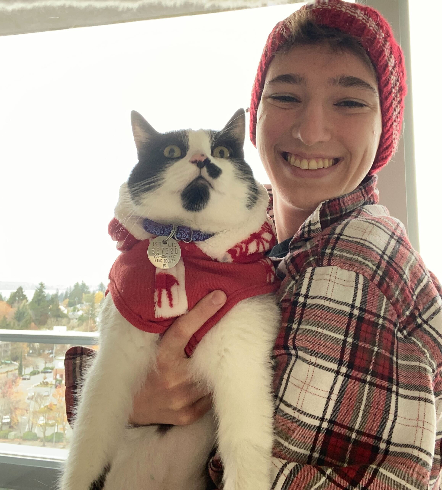

| Cassia Torczon Computer Science Ph.D. Student PLClub @ University of Pennsylvania Office : 571 Levine Hall (GRW) E-mail : ctorczon@seas.upenn.edu GitHub : cassiatorczon Curriculum Vitae |
 |
I am a third-year Ph.D. student at the University of Pennsylvania, advised by Benjamin
Pierce and Stephanie
Weirich.
I am interested in proof assistants and their usability, type theory, and logic.
I graduated from Rice University in 2020 with a Bachelor's degree in Computer Science & Mathematics. I then spent two years working at Microsoft in Seattle before starting my Ph.D in 2022.